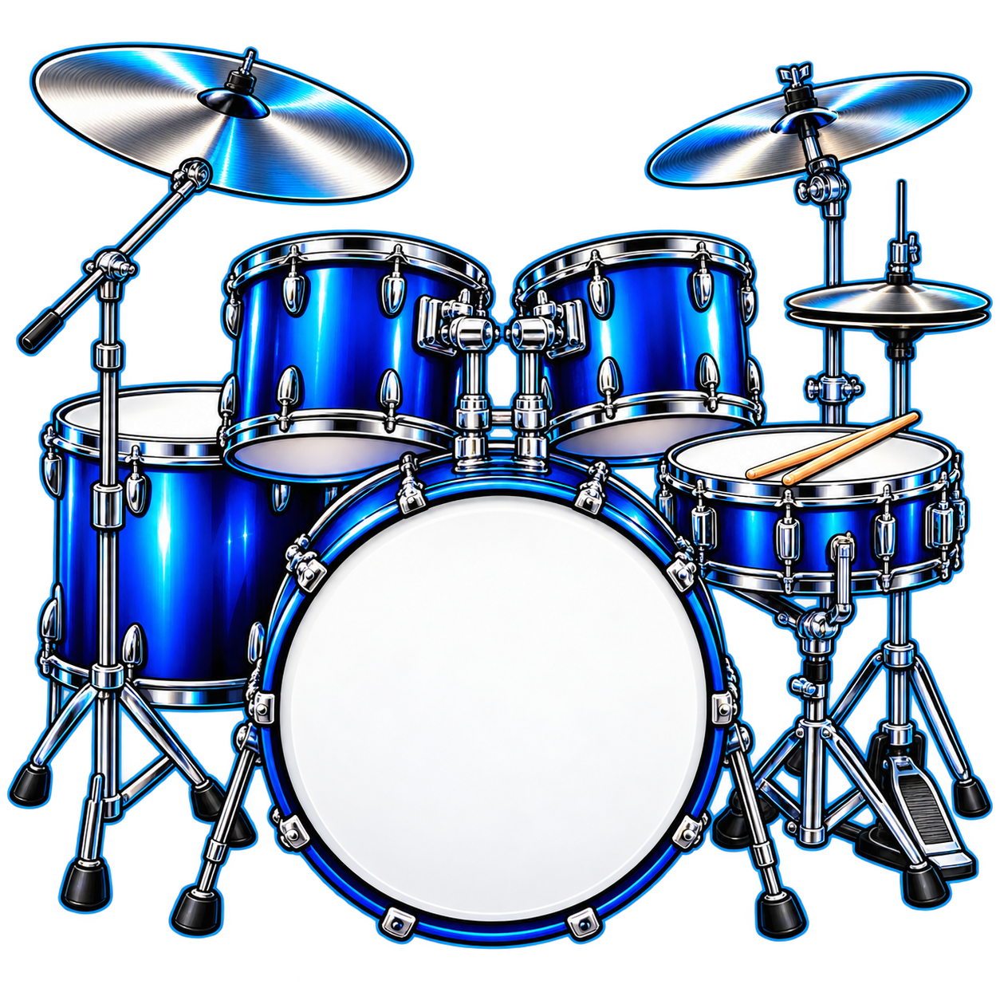

Referência enviada
Este player mantém o BPM original.
Peças e timbres
As peças acompanham o volume geral de percussão. Você pode trocar o timbre, ajustar ou silenciar cada camada. Os ajustes são salvos neste navegador.
Mesa de timbres Ouça, equilibre e silencie cada peça
Percussão auxiliar Percussão da levada · ajuste ou desligue
Bateria e percussões fazem parte da gravação. O volume geral ajusta o conjunto.
Famílias e levadas
Editor do groove Edite bateria e percussão
Meus ajustes Repertório salvo neste dispositivo
Por dentro do groove Contagem e referências
Todos os modelos usam as gravações enviadas, com processamento de BPM variável.
Ver referências musicais e critérios →Referências desta levada Vídeos, áudio e partituras
Gravações organizadas por estilo, com BPM e recortes estimados para sua conferência.
Abrir catálogo de referências →Instalação e uso offline Leve seus ritmos para o aparelho
Instale o aplicativo e abra pelo ícone. Baixe os ritmos dentro do app instalado para usá-los sem conexão.
- Android: abra no Chrome e use “Instalar aplicativo” ou o menu ⋮ → Instalar app.
- iPhone e iPad: abra no Safari → Compartilhar → Adicionar à Tela de Início. Ative “Abrir como App da Web”, se aparecer.
- Windows: abra no Edge ou Chrome e use o botão de instalação da barra de endereços.
- Mac: no Safari do macOS Sonoma 14 ou posterior, use Arquivo → Adicionar ao Dock. Chrome e Edge também oferecem instalação.
Preparando acesso offline…
O primeiro download precisa de internet. Depois de baixar, confira o status “Biblioteca offline completa” neste aparelho. O sistema pode liberar esse armazenamento se faltar espaço ou se os dados do app forem apagados. Mantenha o app aberto durante a execução; chamadas e bloqueio de tela podem interromper o áudio.